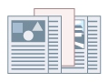

Можно вставить листы, страницы главы или бумагу для таблиц в указанных местах документов.

1.
Откройте вкладку [Источник бумаги].
2.
Выберите [Вставка листов] из [Выбор бумаги].
3.
Выберите метод подачи (источник) бумаги в [Выбор по] → установите источник бумаги или тип бумаги для страниц содержания.
Если выбрано [Выбор по] → [Источнику бумаги]: выберите из [Исходный источник бумаги]
Если выбрано [Выбор по] → [Типу бумаги]: выберите из [Исходный Типу бумаги]
4.
Нажмите [Настройки вставки листа].
5.
Выберите тип бумаги из [Листы для вставки] → укажите [Источник бумаги], [Печать на] и [Вставка].
Указать [Печать на] можно только в том случае, если были выбраны [Страницы главы] для [Листы для вставки].
6.
Нажмите [Добавить].
Настройки вставки листов добавлены в [Список настроек].
7.
Нажмите [ОК].
Функции, недоступные в сочетании с данной функцией
Вкладка [Основные настройки] или [Окончательная обработка] → [Окончательная обработка] → [Группирование] или [Поворот]
[Настройки устройства] → [Буферизация на хост-компьютере] → [Отключена]
Справки
Можно вставить до 100 листов или страниц глав. Номера листов, которые можно указать для вставки листов или страниц глав - от страницы 1 до страницы 9999.
Если для параметра [Сохранение] было выбрано значение [Способ вывода], данный параметр может быть недоступен в зависимости от используемой модели принтера или контроллера принтера.
При выборе [Страницы главы], печать осуществляется только на передней стороне страницы. Для вставки пустых листов выберите [Вставленные листы].